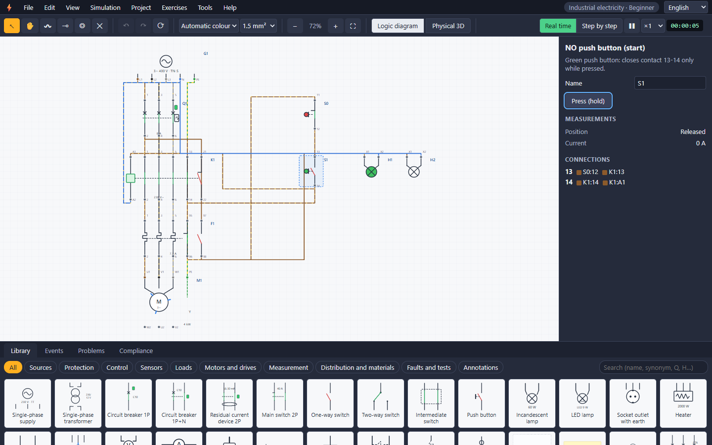
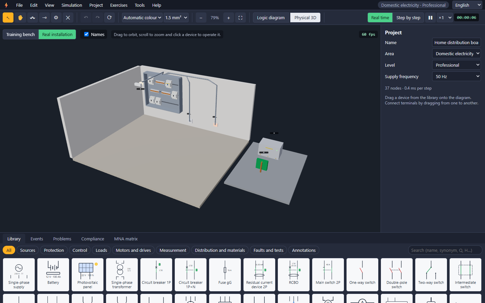
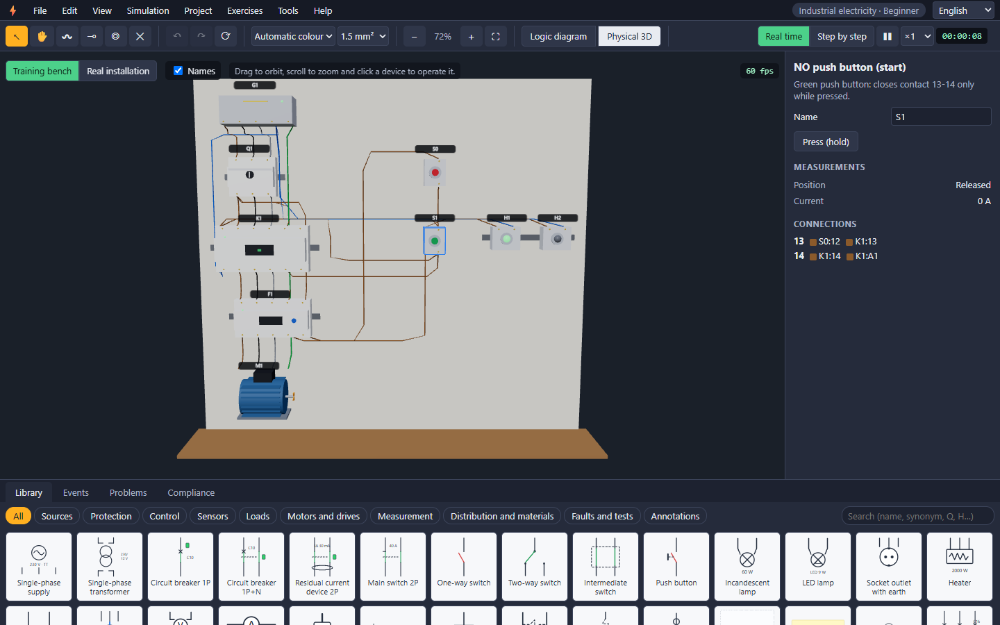

Real devices
Circuit breakers, RCDs, contactors, overload relays, motors, drives, PLCs, solar panels and measuring instruments, with IEC 60617 symbols.
Electrical installation simulator for teaching
Faísca Tracer simulates domestic and industrial installations with real devices. Wire them up, operate switches and protections, measure voltages and currents and see the result in a 2D diagram and a physical 3D view.
0 downloads

What it is
Just like on a test bench, you build the circuit with real devices and switch on the supply. The difference: nothing gets damaged, and every fault comes with an explanation.
Circuit breakers, RCDs, contactors, overload relays, motors, drives, PLCs, solar panels and measuring instruments, with IEC 60617 symbols.
Voltages, currents, power and voltage drops come from the formulas of electrical engineering. Every value can be checked by hand.
When something trips or doesn't work, a short message tells you what happened, where, why and what to do.
The same project on a training bench or in a real installation. Click a device to operate it and watch the lamp light up or the motor turn.
A brief, objectives checked automatically and a score. Trainers create their own exercises without programming.
Indicative IEC 60364 rules: Ib ≤ In ≤ Iz, voltage drops, 30 mA RCD on sockets, exposed conductive parts connected to earth.
Two areas

Homes and shops: a light point, two-way switching, sockets with earth, a consumer unit with RCD, protection of people in TT systems, cable sizing and a solar system with battery.

Motors and control: direct-on-line start with self-holding, forward-reverse, star-delta, variable frequency drive, power factor correction and a PLC programmed in ladder.
Who it's for
One simulator serves both. At Beginner level the interface shows the essentials; at Professional level it shows everything.
On technical and engineering courses. A guided tour teaches you to build your first circuit by doing it, step by step, and mistakes turn into explanations.
In training centres, schools and universities. Ready-made examples, automatically marked exercises, tamper-proof exercise files and printable reports.
Electricians, maintenance technicians and engineers who want to test a control or power diagram before building it.
How to use it
Projects are saved as .fast files. A project started in the browser opens in the app, and vice versa.
Installs on your computer and works offline. Opens and saves projects directly in your folders. Ideal for classrooms without a network and for everyday use.
.fast files open with a double click0 downloads
Version 1.1.0 · 210 MB installer · other versions and release notes
Nothing to install. Opens in a new tab, on any computer. Ideal for trying it out, for lessons on shared computers and for showing a circuit to someone.
.fast filesOpens in a new tab
Your feedback
Like it? Found a bug? Missing a device, an example or an exercise? Tell us. Every message is read.
Faísca Tracer is a teaching tool. It does not replace the design of an installation according to the regulations.